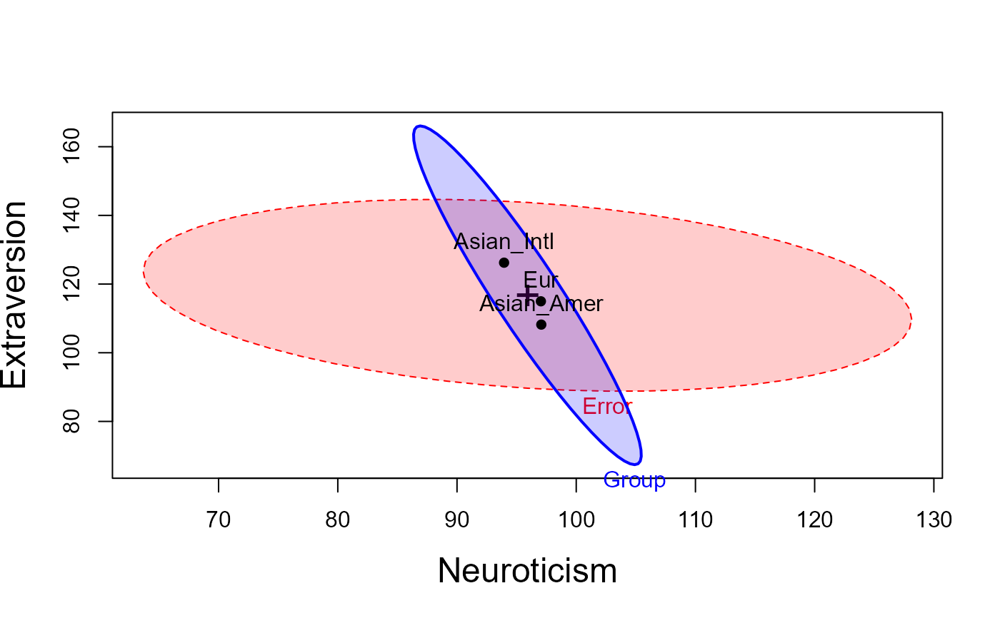
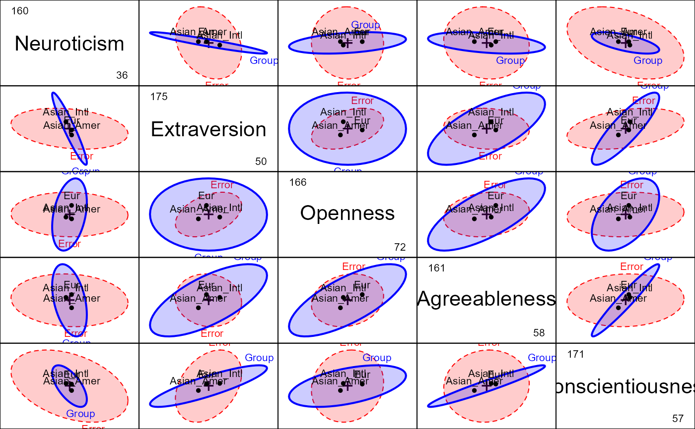

This dataset, from Grice & Iwasaki (2007), gives scores on the five personality scales of the NEO PI-r (Costa & McCrae, 1992), called the "Big Five" personality traits: Neuroticism, Extraversion, Openness-to-Experience, Agreeableness, and Conscientiousness.
Format
A data frame with 203 observations on the following 7 variables.
IDID number
Groupa factor with levels
EurAsian_AmerAsian_IntlNNeuroticism score
EExtraversion score
OOpenness score
AAgreeableness score
CConscientiousness score
Source
Grice, J., & Iwasaki, M. (2007). A truly multivariate approach to MANOVA. Applied Multivariate Research, 12, 199-226. https://doi.org/10.22329/amr.v12i3.660.
Details
The groups are:
- Eur
European Americans (Caucasians living in the United States their entire lives)
- Asian_Amer
Asian Americans (Asians living in the United States since before the age of 6 years)
- Asian_Intl
Asian Internationals (Asians who moved to the United States after their 6th birthday)
The factor Group is set up to compare E vs. Asian and the two Asian
groups
References
Costa Jr, P. T., & McCrae, R. R. (1992). Revised NEO Personality Inventory (NEO PI-R) and NEO Five-Factor Inventory (NEOFFI) professional manual. Psychological Assessment Resources.
Examples
data(Iwasaki_Big_Five)
str(Iwasaki_Big_Five)
#> tibble [203 × 7] (S3: tbl_df/tbl/data.frame)
#> $ ID : num [1:203] 1 2 3 4 5 6 7 8 9 10 ...
#> $ Group: Factor w/ 3 levels "Eur","Asian_Amer",..: 3 3 3 3 3 3 3 3 3 3 ...
#> ..- attr(*, "contrasts")= num [1:3, 1:2] 2 -1 -1 0 1 -1
#> .. ..- attr(*, "dimnames")=List of 2
#> .. .. ..$ : chr [1:3] "Eur" "Asian_Amer" "Asian_Intl"
#> .. .. ..$ : NULL
#> $ N : num [1:203] 87 101 63 104 70 63 77 123 76 59 ...
#> $ E : num [1:203] 117 134 135 118 114 131 140 122 141 133 ...
#> $ O : num [1:203] 130 123 111 108 110 108 118 115 109 104 ...
#> $ A : num [1:203] 124 115 71 107 119 125 131 99 134 130 ...
#> $ C : num [1:203] 127 124 134 111 120 138 103 107 142 126 ...
mod <- lm(cbind(N, E, O, A, C) ~ Group, data=Iwasaki_Big_Five)
car::Anova(mod)
#>
#> Type II MANOVA Tests: Pillai test statistic
#> Df test stat approx F num Df den Df Pr(>F)
#> Group 2 0.41862 10.43 10 394 1.106e-15 ***
#> ---
#> Signif. codes: 0 '***' 0.001 '**' 0.01 '*' 0.05 '.' 0.1 ' ' 1
# heplots
labs <- c("Neuroticism", "Extraversion", "Openness", "Agreeableness", "Consientiousness" )
heplot(mod,
fill = TRUE, fill.alpha = 0.2,
cex.lab = 1.5,
xlab = labs[1], ylab = labs[2])

heplot(mod, variables = c(2,5),
fill = TRUE, fill.alpha = 0.2,
cex.lab = 1.5,
xlab = labs[2], ylab = labs[5])
pairs(mod,
fill = TRUE, fill.alpha = 0.2, var.labels = labs)
